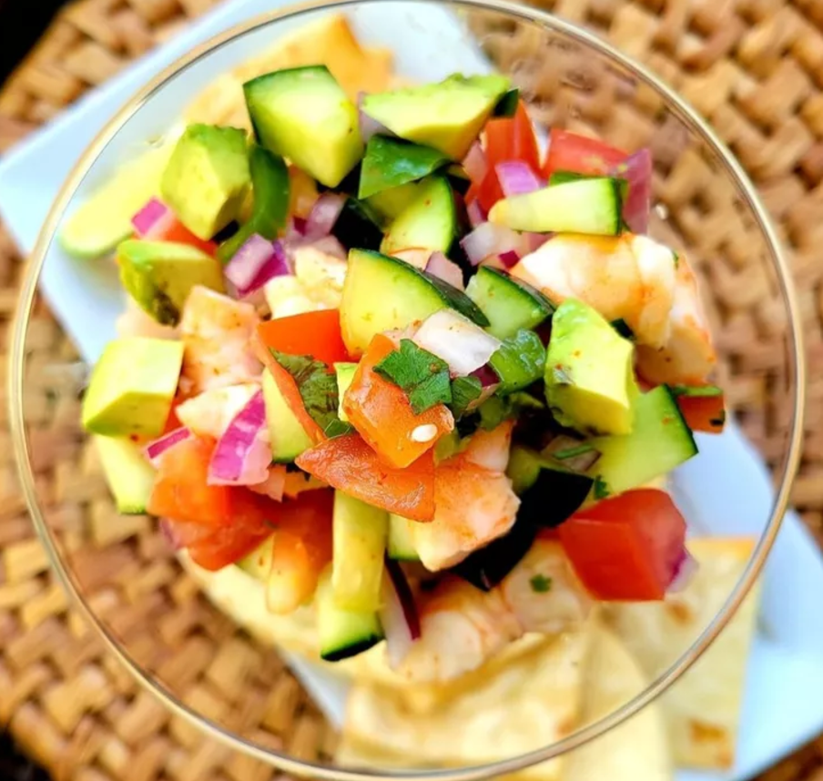

Basic ceviche - adapted version from AllRecipes.com

Super light and refreshing. I use this easy ceviche recipe without the fish (reduce the lime juice) as a topper for grilled tuna. Serves 4 as a lunch, 8 as an appetizer.
Ingredients
- 1 pound halibut, cut into bite-sized pieces
- ½ cup lime juice
- 1 bunch fresh cilantro, chopped
- ⅓ cup chopped red onion
- 1 jalapeño pepper, chopped, or to taste
- 4 cloves garlic, minced
- Riped avocado
- salt and ground black pepper, to taste
Steps
- Place fish into a flat dish; cover with lime juice. Chill fish in refrigerator until tender and opaque, at least 3 hours. Drain lime juice.
- Mix avocado, red onion, jalapeño pepper, garlic, salt, and pepper in a bowl; add fish and stir. Chill in refrigerator until flavors blend, about 20 minutes.